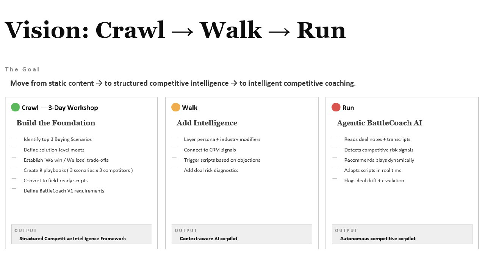
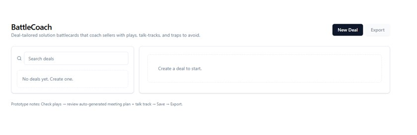
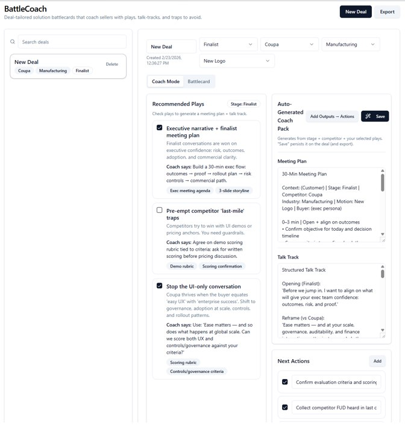
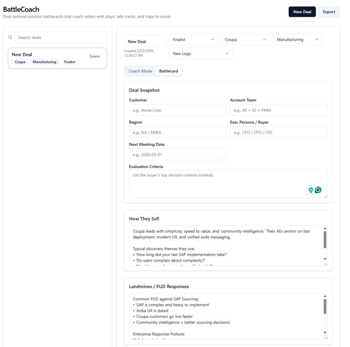

Building an AI Sales Simulator That Thinks Like a PMM
Hyunsoo Shim is creating BattleCoach — an agentic AI prototype that transforms static battlecards into dynamic competitive coaching.
Hyunsoo Shim doesn't use AI to write emails faster. She's using it to redesign how we prepare sellers to win.
With a background in building executive communities like the CPO Think Tank and leading competitive field readiness initiatives, Soo has spent her career translating complex product portfolios into clear, differentiated value stories. Her latest experiment takes that expertise to a new level: BattleCoach — an AI-powered competitive co-pilot and deal simulator for sellers.
But here's what makes Soo's project different from most AI experiments: she's not just building a tool. She's rethinking the entire model of how competitive intelligence gets delivered to the field.
The Mandate — and the Problem
That's the directive. Clear enough. But when Soo looked at how competitive enablement actually worked in practice, she found a series of uncomfortable truths:
🚨 The Reality Check
- Field says they're not competitively enabled — despite all the content we create
- Content exists — but it's static, not deal-specific
- We only have portfolio-level battlecards (Ariba vs X) — not solution-level guidance
- No buyer-centric competitive positioning — just feature comparisons
- Sellers are recreating messaging in every deal — reinventing the wheel constantly
And perhaps the most damning insight of all:
"Our competitive messaging often fails the logo swap test."
If you can swap your company's logo for a competitor's and the messaging still works, you don't have differentiation — you have generic claims. Soo wanted to fix that.
The Vision: Crawl → Walk → Run
Rather than trying to build the perfect AI system from day one, Soo designed a phased approach that would build capability progressively — starting with foundational work and evolving toward true agentic AI.

The goal isn't just to move from static content → to intelligent systems. It's to move from "hoping differentiation sticks" to "institutionalizing PMM intelligence into a scalable system."
The Prototype: BattleCoach in Action
Soo is proposing a 3-day competitive workshop — what she calls "bringing PMM and Field together to build the foundation for systematic change." The math is elegant: 3 flagship buying scenarios × 3 competitors = 9 solution-level playbooks.
The goals are clear:
- Refine competitive positioning and differentiation across 3 flagship buying scenarios
- Convert them into field-ready scripts and talk tracks
- Define BattleCoach V1 requirements and build a working prototype together
But here's the key insight Soo emphasizes: "AI still needs our brain inputs." The workshop isn't about letting AI generate generic content — it's about encoding the collective competitive intelligence of experienced PMMs and sellers into a system that can scale that wisdom. That's the secret weapon.
The goal is to move from static content → to structured competitive intelligence → to intelligent competitive coaching. The prototype treats AI as a structured reasoning engine, not just a content generator. Let's walk through how it works.
Inside BattleCoach: The Complete Walkthrough
Start: Create a New Deal

Coach Mode: AI-Generated Competitive Plays

Let's break down what you're seeing in Coach Mode. For this deal — Finalist stage, competing against Coupa, in Manufacturing — BattleCoach generates three strategic plays:
🎯 Recommended Plays
✅ Executive narrative + finalist meeting plan
Finalist conversations are won on executive confidence: risk, outcomes, adoption, and commercial clarity.
Coach says: Build a 30-min exec flow: outcomes → proof → rollout plan → risk controls → commercial path.
☐ Pre-empt competitor 'last-mile' traps
Competitors try to win with UI demos or pricing anchors. You need guardrails.
Coach says: Agree on demo scoring rubric tied to criteria; ask for written scoring before pricing discussion.
✅ Stop the UI-only conversation
Coupa thrives when the buyer equates 'easy UX' with 'enterprise success'. Shift to governance, adoption at scale, and rollout patterns.
Coach says: Use 'Ease matters — and so does what happens at global scale. Can we score both UX and controls/governance against your criteria?'
The right panel auto-generates a complete Coach Pack — including a 30-minute meeting plan, structured talk track with opening scripts, and next actions. All tailored to this specific deal context.
Battlecard Mode: Deep Competitive Intelligence

Switch to the Battlecard tab and you get the deep competitive intelligence layer:
📋 Deal Snapshot
Customer, Account Team, Region, Exec Persona/Buyer, Next Meeting Date, and ranked Evaluation Criteria — all in one place.
🎯 How They Sell
"Coupa leads with simplicity, speed to value, and 'community intelligence.' Their AEs anchor on fast deployment, modern UX, and unified suite messaging."
💣 Landmines / FUD Responses
Common FUD against SAP Sourcing:
- "SAP is complex and heavy to implement"
- "Ariba UX is dated"
- "Coupa customers go live faster"
- "Community intelligence = better sourcing decisions"
This isn't generic battlecard content. It's deal-specific competitive coaching — the kind of guidance that used to require a PMM to personally review every deal.
✅ The Shift in Enablement
- Define buying-scenario based competitive playbooks — not portfolio-level comparisons
- Sharpen solution-level differentiation and moats — pass the logo swap test
- Convert narratives into field-ready scripts — not just messaging frameworks
- Build a dynamic, AI-powered BattleCoach — that adapts to each deal
Why This Matters Beyond SAP
What Soo is building represents a fundamental shift in how competitive intelligence could work. Instead of:
- Sending decks to the field and hoping differentiation sticks
- Relying on tribal knowledge from experienced reps
- Having PMMs manually review every competitive deal
BattleCoach aims to deliver:
- Rehearsal before executive conversations — sellers can practice against simulated buyers
- Repeatable competitive thinking — not dependent on individual PMM availability
- Faster confidence in deal strategy — guidance in minutes, not days
- Institutionalized PMM intelligence — tribal knowledge becomes scalable systems
The Bigger Lesson
What makes Soo's approach remarkable isn't just the technology — it's the reframe. She recognized that AI for PMM isn't about writing faster. It's about building new capabilities:
- A simulation engine — for realistic practice scenarios
- A structured thinking partner — for strategic reasoning
- A system that captures institutional differentiation — preserving tribal knowledge
- A prototyping tool — testing new enablement models before formal investment
What started as a workshop proposal is now shaping how competitive excellence could become an embedded capability — not just an asset repository.
Hyunsoo "Soo" Shim
Soo leads competitive field readiness initiatives for Finance and Procurement LOB Product Marketing, building scalable systems that turn positioning into winning execution. Her work sits at the intersection of strategy, community building, and AI-enabled enablement.
Are You Building Something Similar?
We want to hear from PMM teams using AI to transform their work. Share your story and you could be our next User of the Week.
Submit Your Story →Congratulations to Hyunsoo Shim for showing us what's possible when PMMs think beyond documents and start building systems. BattleCoach isn't just a prototype — it's a vision for how competitive intelligence becomes an embedded coaching capability that scales with your organization.